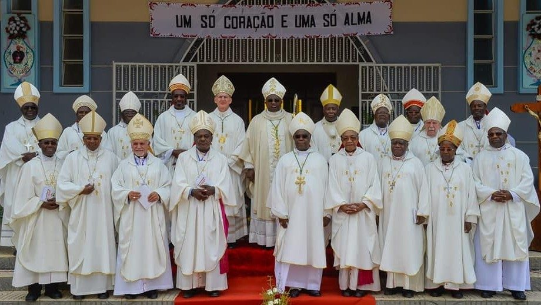

Cola Semba (Estilo Cola Semba - 2014)
Livongh
A Angola (oficialmente República da Angola), é um país da costa Ocidental da África Astral, cujo território tem uma área total de 1 246 700km², sendo o sétimo maior país da África e o vigésimo segundo (22º) do mundo. Sua capital é a cidade de Luanda, a maior cidade da Angola. A seguir temos algumas informações sobre esse país:
Moeda: A moeda oficial da Angola é o Kwanza Angolano. O Kwanza Angolano vale 0,0058 reais.
Valor do PIB: O valor do PIB da Angola em dólares americanos é de 80,40 bilhões.
Dança: As danças típicas da Angola, como o Semba e a Rebita, a rica diversidade cultural do país, e são fundamentais para suas tradições sociais e festividades.
Música: A Angola é um país riquíssimo em ritmos e estilos musicais, refletindo a diversidade cultural do país. A música tradicional angolana é caracterizada por cantos, tambores, e outros instrumentos que servem tanto para fins cerimoniais, quanto de celebrações. O Semba, por exemplo, é uma das músicas tradicionais mais conhecidas da Angola, especialmente entre o povo Kimbundu.
Livongh
Religiosidade: A região da Angola é predominantemente cristã, com o catolicismo como a maior denominação. Mas também inclui uma diversidade de práticas religiosas, incluindo o protestantismo e religiões, tradicionais africanas (como o candomblé e a kimbanda).
Comida: A culinária angolana é rica e diversificada, refletindo influências africanas, portuguesas e brasileiras, com pratos típicos como o funge e a muamba de galinha.
Funge
Muamba
A Angola, por mais que seja um país com grande diversidade cultural, algumas coisas precisam melhorar. O combate à fome e à pobreza é a principal dificuldade desse país. Muitas pessoas sofrem com a falta de comida e com doenças causadas pela falta de emprego para a juventude, educação e acesso aos serviços básicos de saúde. Portanto, para que o país possa ser bem desenvolvido, é muito importante investir em políticas públicas que aprimorem essas condições, garantindo um futuro digno para todos os angolanos.